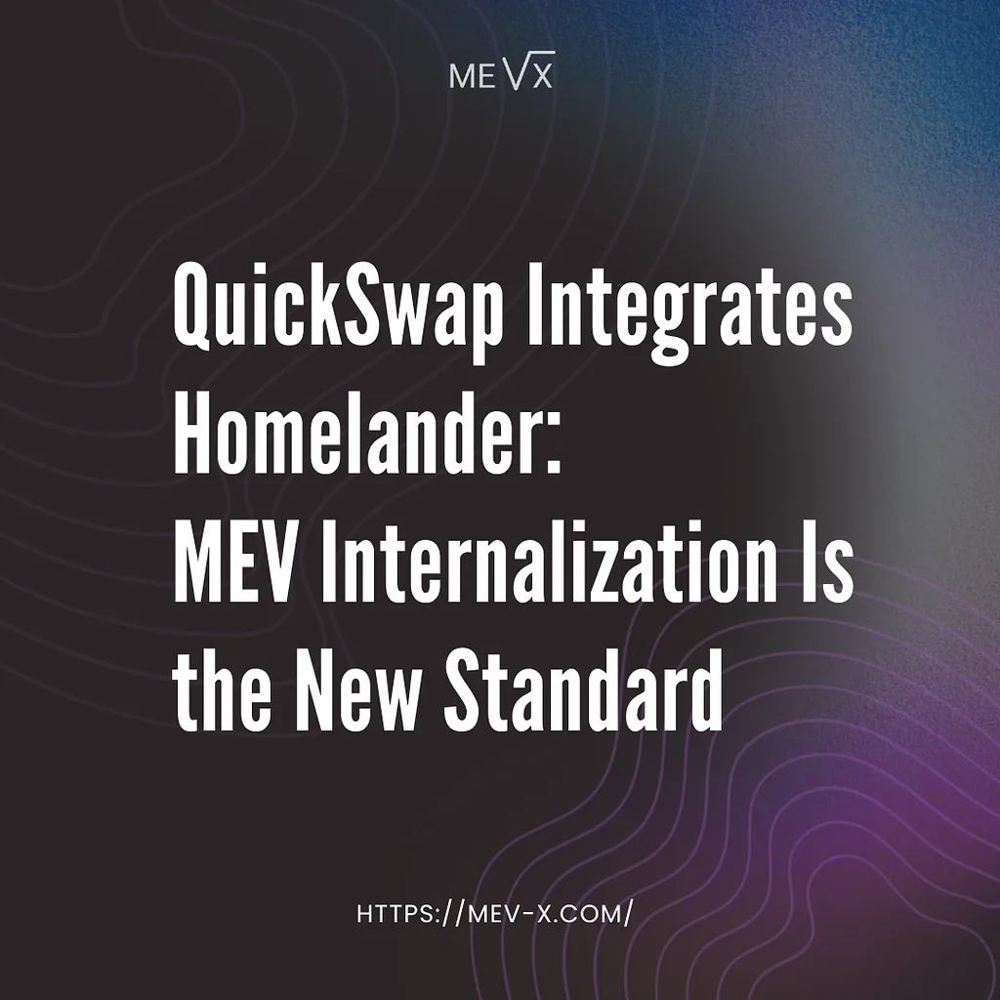
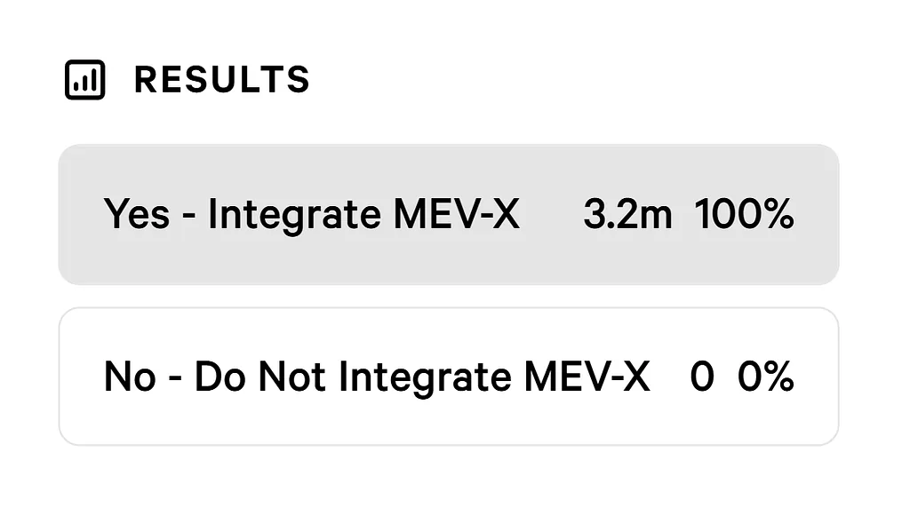

QuickSwap’s community voted to integrate Homelander as a backrunning MEV internalization plugin for their Algebra V4 pools. This post covers what the integration does, what the vote reflects about the state of MEV thinking in DeFi, and what comes next.
MEV internalization is the practice of capturing arbitrage value generated by a DEX’s own orderflow atomically, inside the originating swap transaction, and returning it to the protocol as recurring on-chain revenue rather than allowing it to exit to external searchers and block builders.
The vote produced a result that speaks for itself: 3.2 million QUICK in favor, zero in opposition, across the full duration of the Snapshot. There is something substantive here beyond the announcement. A governance vote that closes without a single opposing token is unusual, and the reason it happened tells you something about where DEX communities are in their thinking about MEV.

About QuickSwap
QuickSwap is one of the most established DEX protocols in the EVM ecosystem. It launched on Polygon in 2021, expanded across multiple chains, and operates today across Algebra V4 concentrated liquidity pools on Polygon, Base, and other networks. Its governance structure is real in a way that is not universal in DeFi: proposals go through a public Reddit discussion phase before reaching a formal Snapshot vote, QUICK holders participate in both stages, and major protocol decisions are made by the community rather than pushed through by a core team.
This matters for context. When the QuickSwap community votes on a third-party integration, they are evaluating a claim about protocol economics and making a decision with real consequences for how revenue flows. The vote on Homelander was structured as a full governance proposal: terms disclosed, commercial model explained, exclusivity conditions laid out, and the community given the opportunity to discuss and oppose before casting votes.
QuickSwap’s track record is one of deliberate adoption of infrastructure that strengthens the protocol’s economic position, and MEV internalization is the next step in that direction.
The Proposal, the Vote, and What the Result Reflects
The proposal offered QuickSwap an exclusive integration of Homelander across their Algebra V4 pools. The integration works through the Algebra plugin system. Homelander is an approved plugin in the Algebra marketplace, which means activation requires a configuration step rather than a new contract deployment. Once active, the post-swap callback on each pool forwards the updated state to our execution layer, which evaluates whether a profitable backrun exists and executes it atomically inside the same transaction if it does. If no opportunity is found, the hook returns cleanly with no side effects on the user’s swap.
Governance votes on third-party integrations almost always produce some opposition. The structure of decentralized governance creates natural friction: token holders have heterogeneous priors about counterparty risk, different time horizons for evaluating revenue mechanisms, and different levels of tolerance for protocol-level changes. A proposal that passes with 60–70% approval is already a strong result. Given all of that, what makes this result notable is the complete absence of opposition.

MEV as a concept has been poorly understood at the community level for most of DeFi’s history. The term itself carries associations that are almost entirely negative: bots, front-running, sandwich attacks, value extracted at the expense of ordinary users. For most governance participants, MEV was something to be protected against, not a mechanism with distinct categories that carry different implications for different actors. The idea that a protocol generates MEV through its own orderflow, that this value exits the protocol entirely under the current model, and that it can be captured internally and returned as protocol revenue: this chain of reasoning requires a more precise understanding of what MEV actually is than most communities have historically had. A governance vote that closes with zero opposition on exactly this kind of proposal is evidence that the baseline understanding has shifted, and shifted meaningfully.
The broader DeFi community is arriving at a more accurate model of what MEV is and where it goes: the question is no longer whether MEV exists or whether it affects protocols, but who captures it and on whose behalf. For any spot AMM DEX operating on concentrated liquidity architecture, the answer that follows directly from that framing is internalization.
Why MEV Internalization Is Becoming a DEX Standard
MEV internalization changes the competitive dynamics between DEX protocols in a way that makes adoption self-reinforcing. A protocol that internalizes MEV generates additional revenue on every qualifying swap without charging users more or adjusting fee tiers. That revenue can be directed toward liquidity incentives, protocol development, or token holders — compounding the protocol’s ability to attract and retain volume. A competing protocol that does not internalize is operating with a structurally smaller revenue base on equivalent volume. Over time, that gap compounds.
As internalization becomes more common among leading protocols, the ones that have not adopted it face a different kind of pressure: not just the opportunity cost of uncaptured MEV, but the question of why a protocol with access to the same infrastructure and the same integration path would leave that revenue on the table. For an average concentrated liquidity DEX, MEV internalization can generate additional protocol revenue comparable in scale to the protocol’s own trading fee income. The answer becomes harder to construct as the list of protocols that have made the opposite decision grows.
Protocols that delay are making a choice with a cost that accumulates on every swap. At low volume, that cost is easy to ignore. At scale, it becomes a structural disadvantage that is increasingly difficult to close without the kind of architectural intervention that is far more disruptive to deploy after the fact than at the point of initial integration. DEX infrastructure decisions made today, on whether to treat MEV internalization as a default or an afterthought, will define which protocols are capturing the full economic value of their own orderflow and which ones are still funding someone else’s operation.
The timing also matters. Hook-based AMM architectures — Algebra Integral, Uniswap v4, PancakeSwap Infinity — are where new DEX development is concentrated. Protocols building on these frameworks today are making architectural decisions that will govern how their revenue model operates for years. MEV internalization is a deployment decision, and the time to make it is when the infrastructure is being set up. For any team building on modern concentrated liquidity infrastructure, the question of whether to internalize is increasingly a question of whether to leave a recurring revenue channel unconfigured by default. Protocols that integrate it from the start are done, the ones that do not are deferring a decision that only becomes more expensive to make later.
We would like to thank the QuickSwap community for the open and thorough governance process, and the Algebra team for building the plugin infrastructure that makes integrations like this possible! Working with teams that approach protocol development with this level of rigor is something we genuinely value — these are the projects that move DeFi forward, and we are glad to be building alongside them.
For a deeper look at Homelander’s mechanics, check the documentation and our earlier publications (I/II/III). If you’d like to explore an integration or partnership, you can reach us on Telegram.